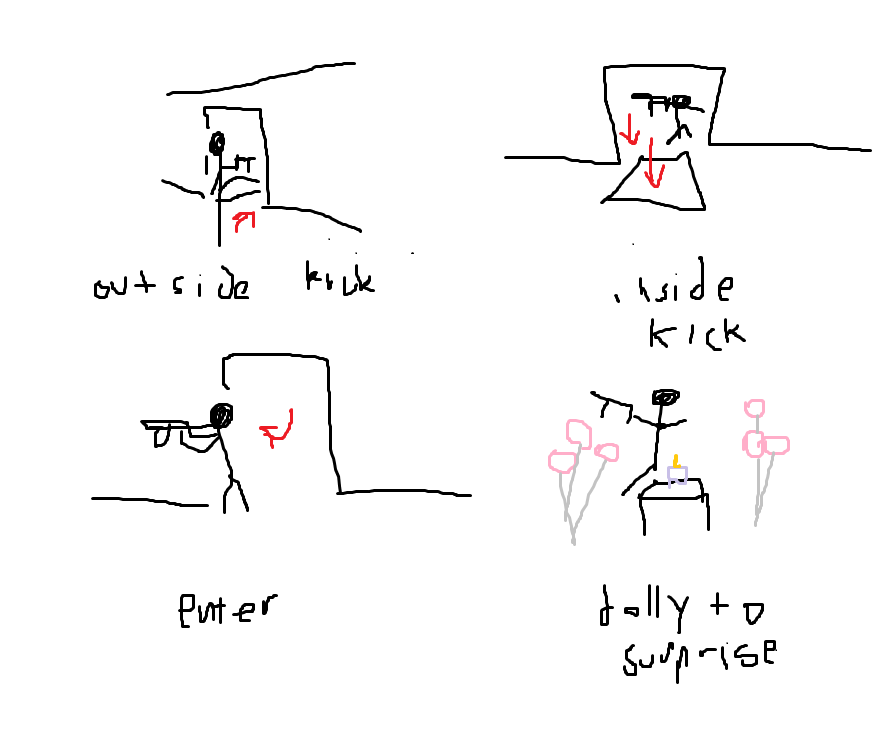
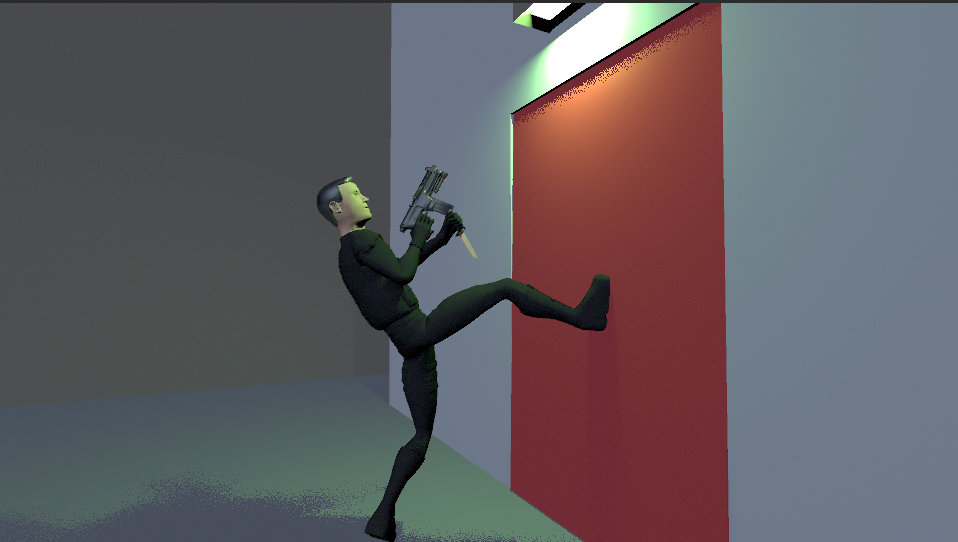
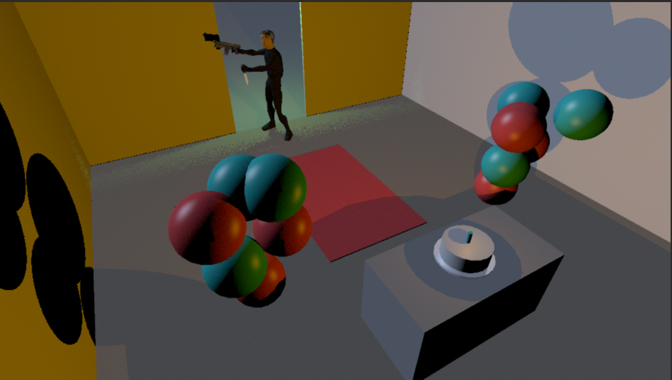
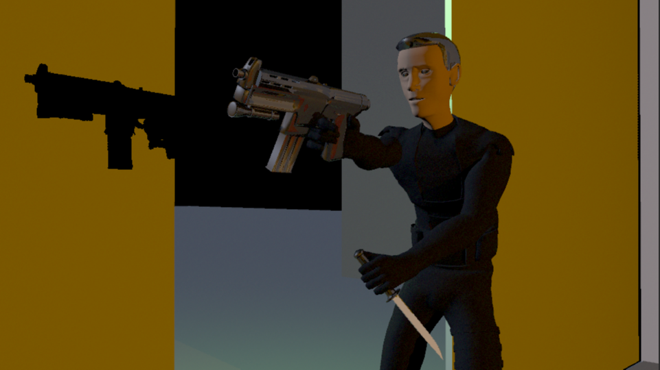

Computer Animation
Spring 2017
Due 4/27/2017
Using the provided motion capture data, I made an animation about an action hero type who spoils his own surprise birthday party by accident. Initially, I had planned on attempting to make some sort of looping animation, but I was displeased with the results, so I started with this simpler idea.
I put a fair bit of effort into fixing the motion capture data. I ironed out all the points where the gun twitched significantly, I moved the gun so that it never intersect the action hero's face, and I moved the arm that used to cross through the other one. When I saw the position of the arm, I was reminded of the action hero look where they hold a gun in one hand and a knife in the other. I decided to take the knife off of the boot and to put it in the character's hand. I'm very pleased with the way it turned out - it looks like he's ready to take someone on if they're next to the door.
Despite some stability issues with Maya, I was able to render the scene out in a timely manner. I used a kind of gross-looking green light on the exterior of the building, and I used a directional light that doesn't cast shadows that had a blue cast. I think it gave the exterior a grimy nighttime feeling, which is what I was going for. For the interior, I used a warm point light for the candle on the cake, and I used an area light in the ceiling. The area light didn't look quite as nice as I wanted, but it looked better than the other options.
 I used a variety of materials in the scene. I initially tried a hair shader for he hero's hair, but it was much too shiny, and it looked like he had chrome on his head. I went with a dark Lambert shader instead. For the weapons, I used Phong and Blinn shaders.
At the end of all of this, I have to say that I am pleased with what I was able to make. I think the sound effects and materials went a long way to making this animation solid.